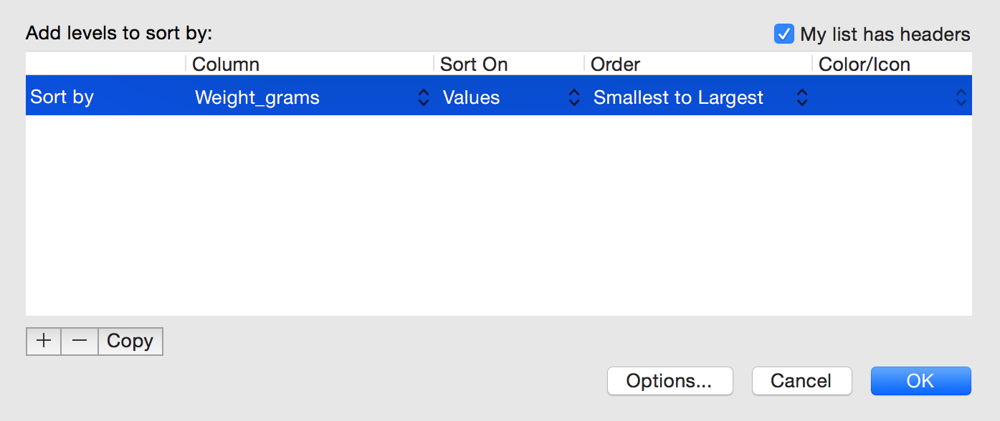
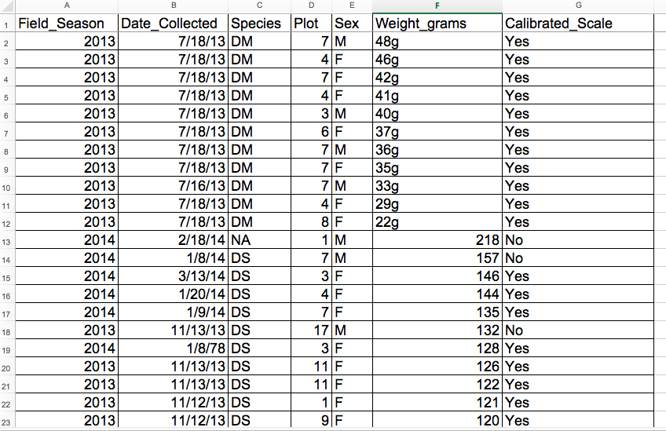
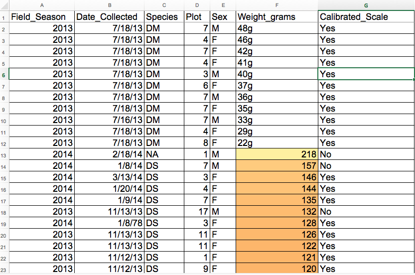

Content from Introduction
Last updated on 2023-05-03 | Edit this page
Overview
Questions
- What are basic principles for using spreadsheets for good data organization?
Objectives
- Describe best practices for organizing data so computers can make the best use of data sets.
Good data organization is the foundation of your research project. Most researchers have data or do data entry in spreadsheets. Spreadsheet programs are very useful graphical interfaces for designing data tables and handling very basic data quality control functions.
Spreadsheet outline
After this lesson, you will be able to:
- Implement best practices in data table formatting
- Identify and address common formatting mistakes
- Understand approaches for handling dates in spreadsheets
- Utilize basic quality control features and data manipulation practices
- Effectively export data from spreadsheet programs
Overall good data practices
Spreadsheets are good for data entry. Therefore we have a lot of data in spreadsheets. Much of your time as a researcher will be spent in this ‘data wrangling’ stage. It’s not the most fun, but it’s necessary. We’ll teach you how to think about data organization and some practices for more effective data wrangling. Not only will this save time and effort, it also paves the way for more equitable and inclusive science. Making our work more accessible provides wider avenues for collaboration and improvement!
What this lesson will not teach you
- How to do statistics in a spreadsheet
- How to do plotting in a spreadsheet
- How to write code in spreadsheet programs
If you’re looking to do this, a good reference is Head First Excel, published by O’Reilly.
Why aren’t we teaching data analysis in spreadsheets
Data analysis in spreadsheets usually requires a lot of manual work. If you want to change a parameter or run an analysis with a new dataset, you usually have to redo everything by hand. (We do know that you can create macros, but see the next point.)
It is also difficult to track or reproduce statistical or plotting analyses done in spreadsheet programs when you want to go back to your work or someone asks for details of your analysis.
Spreadsheet programs
Many spreadsheet programs are available. Since most participants utilize Excel as their primary spreadsheet program, this lesson will make use of Excel examples.
Free spreadsheet programs that can also be used are LibreOffice Calc, and even Google Sheets.
Commands may differ a bit between programs, but the general idea is the same.
Spreadsheets encompass a lot of the things we need to be able to do as researchers. We can use them for:
- Data entry
- Organizing data
- Subsetting and sorting data
- Statistics
- Plotting
We do a lot of different operations in spreadsheets. What kind of operations do you do in spreadsheets? Which ones do you think spreadsheets are good for?
Problems with Spreadsheets
Spreadsheets are good for data entry, but in reality we tend to use spreadsheet programs for much more than data entry. We use them to create data tables for publications, to generate summary statistics, and make figures.
Generating tables for publications in a spreadsheet is not optimal - often, when formatting a data table for publication, we’re reporting key summary statistics in a way that is not really meant to be read as data, and often involves special formatting (merging cells, creating borders, making it pretty). Cutting and pasting from a spreadsheet to a document software (like Word) can have unpredictable results. We advise you to create tables within these document software using the document’s own table editing software.
The latter two applications, generating statistics and figures, should be used with caution: because of the graphical, drag and drop nature of spreadsheet programs, it can be very difficult, if not impossible, to replicate your steps (much less retrace anyone else’s), particularly if your stats or figures require you to do more complex calculations. Furthermore, in doing calculations in a spreadsheet, it’s easy to accidentally apply a slightly different formula to multiple adjacent cells. When using a command-line based statistics program like R or SAS, it’s practically impossible to apply a calculation to one observation in your dataset but not another unless you’re doing it on purpose.
Using Spreadsheets for Data Entry and Cleaning
However, there are circumstances where you might want to use a spreadsheet program to produce “quick and dirty” calculations or figures, and data cleaning will help you use some of these features. Data cleaning also puts your data in a better format prior to importation into a statistical analysis program. We will show you how to use some features of spreadsheet programs to check your data quality along the way and produce preliminary summary statistics.
In this lesson, we will assume that you are most likely using Excel as your primary spreadsheet program - there are others (gnumeric, Calc from OpenOffice), and their functionality is similar, but Excel seems to be the program most used by biologists and ecologists.
In this lesson we’re going to talk about:
Content from Formatting data tables in Spreadsheets
Last updated on 2023-05-03 | Edit this page
Overview
Questions
- How do we format data in spreadsheets for effective data use?
Objectives
- Describe best practices for data entry and formatting in spreadsheets.
- Apply best practices to arrange variables and observations in a spreadsheet.
The most common mistake made is treating spreadsheet programs like lab notebooks, that is, relying on context, notes in the margin, spatial layout of data and fields to convey information. As humans, we can (usually) interpret these things, but computers don’t view information the same way, and unless we explain to the computer what every single thing means (and that can be hard!), it will not be able to see how our data fits together.
Using the power of computers, we can manage and analyze data in much more effective and faster ways, but to use that power, we have to set up our data for the computer to be able to understand it (and computers are very literal).
This is why it’s extremely important to set up well-formatted tables from the outset - before you even start entering data from your very first preliminary experiment. Data organization is the foundation of your research project. It can make it easier or harder to work with your data throughout your analysis, so it’s worth thinking about when you’re doing your data entry or setting up your experiment. You can set things up in different ways in spreadsheets, but some of these choices can limit your ability to work with the data in other programs or have the you-of-6-months-from-now or your collaborator work with the data.
Keeping track of your analyses
When you’re working with spreadsheets, during data clean up or analyses, it’s very easy to end up with a spreadsheet that looks very different from the one you started with. In order to be able to reproduce your analyses or figure out what you did when Reviewer #3 asks for a different analysis, you should
- create a new file with your cleaned or analyzed data. Don’t modify the original dataset, or you will never know where you started!
- keep track of the steps you took in your clean up or analysis. You should track these steps as you would any step in an experiment. We recommend that you do this in a plain text file stored in the same folder as the data file.
This might be an example of a spreadsheet setup:

Put these principles in to practice today during your Exercises.
Note
This is out of scope for this lesson, but for information on how to maintain version control over your data, look at our lesson on ‘Git’.
Structuring data in spreadsheets
The cardinal rule of using spreadsheet programs for data is to keep it “tidy”:
- Put all your variables in columns - the thing you’re measuring, like ‘weight’ or ‘temperature’.
- Put each observation in its own row.
- Don’t combine multiple pieces of information in one cell. Sometimes it just seems like one thing, but think if that’s the only way you’ll want to be able to use or sort that data.
- Leave the raw data raw - don’t change it!
- Export the cleaned data to a text-based format like CSV (comma-separated values) format. This ensures that anyone can use the data, and is required by most data repositories.
For instance, we have data from a survey of small mammals in a desert ecosystem. Different people have gone to the field and entered data into a spreadsheet. They keep track of things like species, plot, weight, sex and date collected.
If they were to keep track of the data like this:

the problem is that species and sex are in the same field. So, if they wanted to look at all of one species or look at different weight distributions by sex, it would be hard to do this using this data setup. If instead we put sex and species in different columns, you can see that it would be much easier.
Columns for variables and rows for observations
The rule of thumb, when setting up a datasheet, is columns = variables, rows = observations, cells = data (values).
So, instead we should have:

Discussion
If not already discussed, introduce the dataset that will be used in this lesson, and in the other ecology lessons, the Portal Project Teaching Dataset.
The data used in the ecology lessons are observations of a small mammal community in southern Arizona. This is part of a project studying the effects of rodents and ants on the plant community that has been running for almost 40 years. The rodents are sampled on a series of 24 plots, with different experimental manipulations controlling which rodents are allowed to access which plots.
This is a real dataset that has been used in over 100 publications. We’ve simplified it just a little bit for the workshop, but you can download the full dataset and work with it using exactly the same tools we’ll learn about today.
Exercise
We’re going to take a messy version of the survey data and describe how we would clean it up.
- Download the data by clicking here to get it from FigShare.
- Open up the data in a spreadsheet program.
- You can see that there are two tabs. Two field assistants conducted
the surveys, one in 2013 and one in 2014, and they both kept track of
the data in their own way in tabs
2013and2014of the dataset, respectively. Now you’re the person in charge of this project and you want to be able to start analyzing the data. - With the person next to you, identify what is wrong with this
spreadsheet. Also discuss the steps you would need to take to clean up
the
2013and2014tabs, and to put them all together in one spreadsheet.
Important Do not forget our first piece of advice: to create a new file (or tab) for the cleaned data, never modify your original (raw) data.
After you go through this exercise, we’ll discuss as a group what was wrong with this data and how you would fix it.
- Take about 10 minutes to work on this exercise.
- All the mistakes in 02-common-mistakes are present in the messy dataset. If the exercise is done during a workshop, ask people what they saw as wrong with the data. As they bring up different points, you can refer to 02-common-mistakes or expand a bit on the point they brought up.
- Note that there is a problem with dates in table ‘plot 3’ in
2014tab. The field assistant who collected the data for year 2014 initially forgot to include their data for ‘plot 3’. They came back in 2015 to include the missing data and entered the dates for ‘plot 3’ in the dataset without the year. Excel automatically filled in the missing year as the current year (i.e. 2015) - introducing an error in the data without the field assistant realising. If you get a response from the participants that they’ve spotted and fixed the problem with date, you can say you’ll come back to dates again towards the end of lesson in episode 03-dates-as-data. If participants have not spotted the problem with dates in ‘plot 3’ table, that’s fine as you will address peculiarities of working with dates in spreadsheets in episode 03-dates-as-data.
There are excellent references to help you work with data in spreadsheets. These include:
Regarding R scripting;
Hadley Wickham, Tidy Data, Vol. 59, Issue 10, Sep 2014, Journal of Statistical Software. http://www.jstatsoft.org/v59/i10.
Appropriately Regarding Data organization in spreadsheets;
Karl W. Broman & Kara H. Woo (2018) Data Organization in Spreadsheets, The American Statistician, 72:1, 2-10, DOI: 10.1080/00031305.2017.1375989.
Content from Formatting problems
Last updated on 2023-05-03 | Edit this page
Overview
Questions
- What are some common challenges with formatting data in spreadsheets and how can we avoid them?
Objectives
- Recognize and resolve common spreadsheet formatting problems.
Common Spreadsheet Errors
This episode is meant to be used as a reference for discussion as learners identify issues with the messy dataset discussed in the previous episode. Instructors: don’t go through this episode except to refer to responses to the exercise in the previous episode.
There are a few potential errors to be on the lookout for in your own data as well as data from collaborators or the Internet. If you are aware of the errors and the possible negative effect on downstream data analysis and result interpretation, it might motivate yourself and your project members to try and avoid them. Making small changes to the way you format your data in spreadsheets can have a great impact on efficiency and reliability when it comes to data cleaning and analysis.
- Using multiple tables
- Using multiple tabs
- Not filling in zeros
- Using problematic null values
- Using formatting to convey information
- Using formatting to make the data sheet look pretty
- Placing comments or units in cells
- Entering more than one piece of information in a cell
- Using problematic field names
- Using special characters in data
- Inclusion of metadata in data table
- Date formatting
Using multiple tables
A common strategy is creating multiple data tables within one spreadsheet. This confuses the computer, so don’t do this! When you create multiple tables within one spreadsheet, you’re drawing false associations between things for the computer, which sees each row as an observation. You’re also potentially using the same field name in multiple places, which will make it harder to clean your data up into a usable form. The example below depicts the problem:

In the example above, the computer will see (for example) row 4 and assume that all columns A-AF refer to the same sample. This row actually represents four distinct samples (sample 1 for each of four different collection dates - May 29th, June 12th, June 19th, and June 26th), as well as some calculated summary statistics (an average (avr) and standard error of measurement (SEM)) for two of those samples. Other rows are similarly problematic.
Using multiple tabs
But what about workbook tabs? That seems like an easy way to organize data, right? Well, yes and no. When you create extra tabs, you fail to allow the computer to see connections in the data that are there (you have to introduce spreadsheet application-specific functions or scripting to ensure this connection). Say, for instance, you make a separate tab for each day you take a measurement.
This isn’t good practice for two reasons:
- you are more likely to accidentally add inconsistencies to your data if each time you take a measurement, you start recording data in a new tab, and
- even if you manage to prevent all inconsistencies from creeping in, you will add an extra step for yourself before you analyze the data because you will have to combine these data into a single datatable. You will have to explicitly tell the computer how to combine tabs - and if the tabs are inconsistently formatted, you might even have to do it manually.
The next time you’re entering data, and you go to create another tab or table, ask yourself if you could avoid adding this tab by adding another column to your original spreadsheet. We used multiple tabs in our example of a messy data file, but now you’ve seen how you can reorganize your data to consolidate across tabs.
Your data sheet might get very long over the course of the experiment. This makes it harder to enter data if you can’t see your headers at the top of the spreadsheet. But don’t repeat your header row. These can easily get mixed into the data, leading to problems down the road.
Instead you can freeze the column headers so that they remain visible even when you have a spreadsheet with many rows.
Not filling in zeros
It might be that when you’re measuring something, it’s usually a zero, say the number of times a rabbit is observed in the survey. Why bother writing in the number zero in that column, when it’s mostly zeros?
However, there’s a difference between a zero and a blank cell in a spreadsheet. To the computer, a zero is actually data. You measured or counted it. A blank cell means that it wasn’t measured and the computer will interpret it as an unknown value (otherwise known as a null value).
The spreadsheets or statistical programs will likely mis-interpret blank cells that you intend to be zeros. By not entering the value of your observation, you are telling your computer to represent that data as unknown or missing (null). This can cause problems with subsequent calculations or analyses. For example, the average of a set of numbers which includes a single null value is always null (because the computer can’t guess the value of the missing observations). Because of this, it’s very important to record zeros as zeros and truly missing data as nulls.
Using problematic null values
Example: using -999, other numerical values, zero, or text to represent missing values. Whatever the reason, it’s a problem if unknown or missing data is recorded as -999, 999, or 0. Many statistical programs will not recognize that these are intended to represent missing (null) values.
How these values are interpreted will depend on the software you use to analyze your data.
Solutions:
A solution will depend on the final application of your data and how
you intend to analyze it, but it is essential to use a clearly defined
and CONSISTENT null indicator. Blank cells are the best choices for most
applications; when working in R, NA may be an acceptable
null value choice.
There are a many reasons why null values get represented differently within a dataset. Sometimes confusing null values are automatically recorded from the measuring device. If that’s the case, there’s not much you can do, but it can be addressed in data cleaning with a tool like OpenRefine before analyzing or sharing. In other cases, null values are used to convey different reasons why the data is missing. This is important information to capture, but is actually using one column to capture two pieces of information. Like for using formatting to convey information it would be good here to create a new column like ‘data_missing’ and use that column to capture the different reasons.
Whatever the reason, missing data is a problem. It is essential to use a clearly defined and consistent null indicator. Blanks (most applications) and NA (for R) are good choices. White et al, 2013, explain good choices for indicating null values for different software applications in their article: Nine simple ways to make it easier to (re)use your data. Ideas in Ecology and Evolution.
| Null Values | Problems | Compatibility | Recommendation |
| 0 | Indistinguishable from a true zero | Never use | |
| Blank | Hard to distinguish values that are missing from those overlooked on entry. Hard to distinguish blanks from spaces, which behave differently | R, Python, SQL | Best Option |
| -999, 999 | Not recognized as null by many programs without user input. Can be inadvertently entered into calculations | Avoid | |
| NA, na | Can also be an abbreviation (e.g., North America), can cause problems with data type (turn a numerical column into a text column). NA is more commonly recognized than na. | R | Good Option |
| N/A | Alternative form of NA, but often not compatible with software | Avoid | |
| NULL | Can cause problem with data type | Avoid | |
| None | Uncommon. Can cause problem with data type. | Python | Avoid |
| No data | Uncommon. Can cause problem with data type, Contains a space | Avoid | |
| Missing | Uncommon. Can cause problem with data type. | Avoid | |
| -,+,. | Uncommon. Can cause problem with data type. | Avoid |
Using formatting to convey information
Example: highlighting cells, rows or columns that should be excluded from an analysis, leaving blank rows to indicate separations in data.

Solution: create a new field to encode which data should be excluded.

Using formatting to make the data sheet look pretty
Example: merging cells.
Solution: If you’re not careful, formatting a worksheet to be more aesthetically pleasing can compromise your computer’s ability to see associations in the data. Merged cells will make your data unreadable by statistics software. Consider restructuring your data in such a way that you will not need to merge cells to organize your data.
Placing comments or units in cells
Example: Your data was collected, in part, by a summer student who you later found out was mis-identifying some of your species, some of the time. You want a way to note these data are suspect.
Solution: Most analysis software can’t see Excel or LibreOffice comments, and would be confused by comments placed within your data cells. As described above for formatting, create another field if you need to add notes to cells. Similarly, don’t include units in cells: ideally, all the measurements you place in one column should be in the same unit, but if for some reason they aren’t, create another field and specify the units the cell is in.
Entering more than one piece of information in a cell
Example: You find one male, and one female of the same species. You enter this as 1M, 1F.
Solution: Don’t include more than one piece of information in a cell. This will limit the ways in which you can analyze your data. If you need both these measurements, design your data sheet to include this information. For example, include one column for number of individuals and a separate column for sex.
Using problematic field names
Choose descriptive field names, but be careful not to include spaces, numbers, or special characters of any kind. Spaces can be misinterpreted by parsers that use whitespace as delimiters and some programs don’t like field names that are text strings that start with numbers.
Underscores (_) are a good alternative to spaces.
Consider writing names in camel case (like this: ExampleFileName) to
improve readability. Remember that abbreviations that make sense at the
moment may not be so obvious in 6 months, but don’t overdo it with names
that are excessively long. Including the units in the field names avoids
confusion and enables others to readily interpret your fields.
Examples
| Good Name | Good Alternative | Avoid |
| Max_temp_C | MaxTemp | Maximum Temp (°C) |
| Precipitation_mm | Precipitation | precmm |
| Mean_year_growth | MeanYearGrowth | Mean growth/year |
| sex | sex | M/F |
| weight | weight | w. |
| cell_type | CellType | Cell Type |
| Observation_01 | first_observation | 1st Obs |
Using special characters in data
Example: You treat your spreadsheet program as a word processor when writing notes, for example copying data directly from Word or other applications.
Solution: This is a common strategy. For example, when writing longer text in a cell, people often include line breaks, em-dashes, etc in their spreadsheet. Also, when copying data in from applications such as Word, formatting and fancy non-standard characters (such as left- and right-aligned quotation marks) are included. When exporting this data into a coding/statistical environment or into a relational database, dangerous things may occur, such as lines being cut in half and encoding errors being thrown.
General best practice is to avoid adding characters such as newlines, tabs, and vertical tabs. In other words, treat a text cell as if it were a simple web form that can only contain text and spaces.
Inclusion of metadata in data table
Example: You add a legend at the top or bottom of your data table explaining column meaning, units, exceptions, etc.
Solution: Recording data about your data (“metadata”) is essential. You may be on intimate terms with your dataset while you are collecting and analysing it, but the chances that you will still remember that the variable “sglmemgp” means single member of group, for example, or the exact algorithm you used to transform a variable or create a derived one, after a few months, a year, or more are slim.
As well, there are many reasons other people may want to examine or use your data - to understand your findings, to verify your findings, to review your submitted publication, to replicate your results, to design a similar study, or even to archive your data for access and re-use by others. While digital data by definition are machine-readable, understanding their meaning is a job for human beings. The importance of documenting your data during the collection and analysis phase of your research cannot be overestimated, especially if your research is going to be part of the scholarly record.
However, metadata should not be contained in the data file itself. Unlike a table in a paper or a supplemental file, metadata (in the form of legends) should not be included in a data file since this information is not data, and including it can disrupt how computer programs interpret your data file. Rather, metadata should be stored as a separate file in the same directory as your data file, preferably in plain text format with a name that clearly associates it with your data file. Because metadata files are free text format, they also allow you to encode comments, units, information about how null values are encoded, etc. that are important to document but can disrupt the formatting of your data file.
Additionally, file or database level metadata describes how files that make up the dataset relate to each other; what format are they are in; and whether they supercede or are superceded by previous files. A folder-level readme.txt file is the classic way of accounting for all the files and folders in a project.
(Text on metadata adapted from the online course Research Data MANTRA by EDINA and Data Library, University of Edinburgh. MANTRA is licensed under a Creative Commons Attribution 4.0 International License.)
Keypoints
- Avoid using multiple tables within one spreadsheet.
- Avoid spreading data across multiple tabs.
- Record zeros as zeros.
- Use an appropriate null value to record missing data.
- Don’t use formatting to convey information or to make your spreadsheet look pretty.
- Place comments in a separate column.
- Record units in column headers.
- Include only one piece of information in a cell.
- Avoid spaces, numbers and special characters in column headers.
- Avoid special characters in your data.
- Record metadata in a separate plain text file.
Content from Dates as data
Last updated on 2023-05-03 | Edit this page
Overview
Questions
- What are good approaches for handling dates in spreadsheets?
Objectives
- Describe how dates are stored and formatted in spreadsheets.
- Describe the advantages of alternative date formatting in spreadsheets.
- Demonstrate best practices for entering dates in spreadsheets.
Dates in spreadsheets can be a problem. For one thing, dates are stored in a single column. While this seems the most natural way to record dates, it actually is not best practice. A spreadsheet application will display the dates in a seemingly correct way (to a human observer) but how it actually handles and stores the dates may be problematic.
In particular, please remember that DATE functions that are valid for a given spreadsheet program (be it LibreOffice Calc, Microsoft Excel, OpenOffice, Gnumeric, etc.) are usually guaranteed to be compatible only within the same family of products. Most of the images of spreadsheets in this lesson come from Microsoft Excel, run on a Mac or on Windows. Regardless of your spreadsheet, if you will later need to export the data and need to conserve the timestamps, you are better off handling them using one of the solutions discussed below.
One of the big problems with Excel is it can turn things that aren’t dates into dates, for example gene/protein names or identifiers like MAR1, DEC1, OCT4 will be changed to dates, and you cannot retreive the original name or identifier (except manually). So if you avoid the date format overall, it’s easier to work with these types of data. When you must work with dates, here is how to do it efficiently.
Exercise
Challenge: pulling month, day and year out of dates
- Let’s create a tab called
datesin our data spreadsheet and copy the ‘plot 3’ table from the2014tab (that contains the problematic dates). - Let’s extract month, day and year from the dates in the
Date collectedcolumn into new columns. For this we can use the following built-in Excel functions:
YEAR()
MONTH()
DAY()
(Make sure the new columns are formatted as a number and not as a date.)
You can see that even though we expected the year to be 2014, the year is actually 2015. What happened here is that the field assistant who collected the data for year 2014 initially forgot to include their data for ‘plot 3’ in this dataset. They came back in 2015 to add the missing data into the dataset and entered the dates for ‘plot 3’ without the year. Excel automatically interpreted the year as 2015 - the year the data was entered into the spreadsheet and not the year the data was collected. Thereby, the spreadsheet program introduced an error in the dataset without the field assistant realising.
 {alt=‘dates, exersize
1’ .output}
{alt=‘dates, exersize
1’ .output}
Exercise
Challenge: pulling hour, minute and second out of the current time
Current time and date are best retrieved using the functions
NOW(), which returns the current date and time, and
TODAY(), which returns the current date. The results will
be formatted according to your computer’s settings.
- Extract the year, month and day from the current date and time
string returned by the
NOW()function. - Calculate the current time using
NOW()-TODAY(). - Extract the hour, minute and second from the current time using
functions
HOUR(),MINUTE()andSECOND(). - Press
F9to force the spreadsheet to recalculate theNOW()function, and check that it has been updated.
- To get the year, type
=YEAR(NOW())into any cell in your spreadsheet. To get the month, type=MONTH(NOW()). To get the day, type=DAY(NOW()). - Typing
=NOW()-TODAY()will result in a decimal value that is not easily human parsable to a clock-based time. You will need to use the strategies in the third part of this challenge to convert this decimal value to readable time. - To extract the hour, type
=HOUR(NOW()-TODAY())and similarly for minute and second.
Preferred date format
It is much safer to store dates with YEAR, MONTH, DAY in separate columns or as YEAR and DAY-OF-YEAR in separate columns.
Note: Excel is unable to parse dates from before 1899-12-31, and will thus leave these untouched. If you’re mixing historic data from before and after this date, Excel will translate only the post-1900 dates into its internal format, thus resulting in mixed data. If you’re working with historic data, be extremely careful with your dates!
Excel also entertains a second date system, the 1904 date system, as the default in Excel for Macintosh. This system will assign a different serial number than the 1900 date system. Because of this, dates must be checked for accuracy when exporting data from Excel (look for dates that are ~4 years off).
Date formats in spreadsheets
Spreadsheet programs have numerous “useful features” which allow them to handle dates in a variety of ways.

But these “features” often allow ambiguity to creep into your data. Ideally, data should be as unambiguous as possible.
Dates stored as integers
The first thing you need to know is that Excel stores dates as numbers - see the last column in the above figure. Essentially, it counts the days from a default of December 31, 1899, and thus stores July 2, 2014 as the serial number 41822.
(But wait. That’s the default on my version of Excel. We’ll get into how this can introduce problems down the line later in this lesson. )
This serial number thing can actually be useful in some circumstances. By using the above functions we can easily add days, months or years to a given date. Say you had a sampling plan where you needed to sample every thirty seven days. In another cell, you could type:
=B2+37And it would return
8-Augbecause it understands the date as a number 41822, and
41822 + 37 = 41859 which Excel interprets as August 8,
2014. It retains the format (for the most part) of the cell that is
being operated upon, (unless you did some sort of formatting to the cell
before, and then all bets are off). Month and year rollovers are
internally tracked and applied.
Note Adding years and months and days is slightly trickier because we need to make sure that we are adding the amount to the correct entity.
- First we extract the single entities (day, month or year)
- We can then add values to do that
- Finally the complete date string is reconstructed using the
DATE()function.
As for dates, times are handled in a similar way; seconds can be directly added but to add hour and minutes we need to make sure that we are adding the quantities to the correct entities.
Which brings us to the many different ways Excel provides in how it displays dates. If you refer to the figure above, you’ll see that there are many ways that ambiguity creeps into your data depending on the format you chose when you enter your data, and if you’re not fully aware of which format you’re using, you can end up actually entering your data in a way that Excel will badly misinterpret and you will end up with errors in your data that will be extremely difficult to track down and troubleshoot.
- Click to the
datestab of the workbook and double-click on any of the values in theDate collectedcolumn. Notice that the dates display with the year 2015. - Select
File -> Save Asin Excel and in the drop down menu for file format selectCSV UTF-8 (Comma delimited) (.csv). ClickSave. - You will see a pop-up that says “This workbook cannot be saved in
the selected file format because it contains multiple sheets.” Choose
Save Active Sheet. - Navigate to the file in your finder application. Right click and
select
Open With. Choose a plain text editor application and view the file. Notice that the dates display as month/day without any year information. - Now right click on the file again and open with Excel. Notice that
the dates display with the current year, not 2015.
As you can see, exporting data from Excel and then importing it back into Excel fundamentally changed the data once again!
Note
You will notice that when exporting into a text-based format (such as
CSV), Excel will export its internal date integer instead of a useful
value (that is, the dates will be represented as integer numbers). This
can potentially lead to problems if you use other software to manipulate
the file.
Storing dates as YEAR, MONTH, DAY
Storing dates in YEAR, MONTH, DAY format helps remove this ambiguity. Let’s look at this issue a bit closer.
For instance this is a spreadsheet representing insect counts that were taken every few days over the summer, and things went something like this:

If Excel was to be believed, this person had been collecting bugs in the future. Now, we have no doubt this person is highly capable, but I believe time travel was beyond even their grasp.
Entering dates in one cell is helpful but due to the fact that the spreadsheet programs may interpret and save the data in different ways (doing that somewhat behind the scenes), there is a better practice.
In dealing with dates in spreadsheets, separate date data into separate fields (day, month, year), which will eliminate any chance of ambiguity.
Storing dates as YEAR, DAY-OF-YEAR
There is also another option. You can also store dates as year and day of year (DOY). Why? Because depending on your question, this might be what’s useful to you, and there is practically no possibility for ambiguity creeping in.
Statistical models often incorporate year as a factor, or a categorical variable, rather than a numeric variable, to account for year-to-year variation, and DOY can be used to measure the passage of time within a year.
So, can you convert all your dates into DOY format? Well, in Excel, here’s a useful guide:

Storing dates as a single string
Another alternative could be to convert the date string into a single
string using the YYYYMMDD format. For example the date
March 24, 2015 would become 20150324. This
option also works for datetimes using the YYYYMMDDhhmmss
format. So the datetime March 24, 2015 17:25:35 would
become 20150324172535, where:
YYYY: the full year, i.e. 2015
MM: the month, i.e. 03
DD: the day of month, i.e. 24
hh: hour of day, i.e. 17
mm: minutes, i.e. 25
ss: seconds, i.e. 35
Such strings will be correctly sorted in ascending or descending order, and by knowing the format they can then be correctly processed by the receiving software.
Content from Quality control
Last updated on 2023-05-03 | Edit this page
Overview
Questions
- How can we carry out basic quality control and quality assurance in spreadsheets?
Objectives
- Apply quality control techniques to identify errors in spreadsheets and limit incorrect data entry.
When you have a well-structured data table, you can use several simple techniques within your spreadsheet to ensure the data you enter is free of errors. These approaches include techniques that are implemented prior to entering data (quality assurance) and techniques that are used after entering data to check for errors (quality control).
Quality Assurance
Quality assurance stops bad data from ever being entered by checking to see if values are valid during data entry. For example, if research is being conducted at sites A, B, and C, then the value V (which is right next to B on the keyboard) should never be entered. Likewise if one of the kinds of data being collected is a count, only integers greater than or equal to zero should be allowed.
To control the kind of data entered into a spreadsheet we use Data Validation (Excel) or Validity (Libre Office Calc), to set the values that can be entered in each data column.
1. Select the cells or column you want to validate
2. On the Data tab select
Data Validation

3. In the Allow box select the kind of data that should
be in the column. Options include whole numbers, decimals, lists of
items, dates, and other values.

4. After selecting an item enter any additional details. For example,
if you’ve chosen a list of values, enter a comma-delimited or semi-colon
list of allowable values in the Source box.
Let’s try this out by setting the plot column in our spreadsheet to only allow plot values that are integers between 1 and 24.
- Select the
plot_idcolumn - On the
Datatab selectData Validation - In the
Allowbox selectWhole number - Set the minimum and maximum values to 1 and 24.

Now let’s try entering a new value in the plot column that isn’t a valid plot. The spreadsheet stops us from entering the wrong value and asks us if we would like to try again.

You can also customize the resulting message to be more informative
by entering your own message in the Input Message tab

or allow invalid data to result in a warning rather than an error by
modifying the Style option on the Error Alert
tab.

Quality assurance can make data entry easier as well as more robust. For example, if you use a list of options to restrict data entry, the spreadsheet will provide you with a drop-downlist of the available items. So, instead of trying to remember how to spell Dipodomys spectabilis, you can select the right option from the list.
Quality Control
Tip: Before doing any quality control operations, save your original file with the formulas and a name indicating it is the original data. Create a separate file with appropriate naming and versioning, and ensure your data is stored as values and not as formulas. Because formulas refer to other cells, and you may be moving cells around, you may compromise the integrity of your data if you do not take this step!
readMe (README) files: As you start manipulating your data files, create a readMe document / text file to keep track of your files and document your manipulations so that they may be easily understood and replicated, either by your future self or by an independent researcher. Your readMe file should document all of the files in your data set (including documentation), describe their content and format, and lay out the organizing principles of folders and subfolders. For each of the separate files listed, it is a good idea to document the manipulations or analyses that were carried out on those data. Cornell University’s Research Data Management Service Group provides detailed guidelines for how to write a good readMe file, along with an adaptable template.
Sorting
Bad values often sort to the bottom or top of the column. For example, if your data should be numeric, then alphabetical and null data will group at the ends of the sorted data. Sort your data by each field, one at a time. Scan through each column, but pay the most attention to the top and the bottom of a column. If your dataset is well-structured and does not contain formulas, sorting should never affect the integrity of your dataset.
Remember to expand your sort in order to prevent data corruption. Expanding your sort ensures that the all the data in one row move together instead of only sorting a single column in isolation. Sorting by only a single column will scramble your data - a single row will no longer represent an individual observation.
Exercise
We’ve combined all of the tables from the messy data into a single table in a single tab. Download this semi-cleaned data file to your computer: survey_sorting_exercise
Once downloaded, sort the Weight_grams column in your
spreadsheet program from Largest to Smallest.
What do you notice?
Click the Sort button on the data tab in Excel. A pop-up will appear.
Make sure you select Expand the selection.
 {alt=‘quality_control0,
exercise1’ .output}
{alt=‘quality_control0,
exercise1’ .output}
The following window will display, choose the column you want to sort as well as the sort order.
 {alt=‘quality_control1, exercise1’ .output}
Note how the odd values sort to the top and bottom of the tabular data. The cells containing no data values sort to the bottom of the tabular data, while the cells where the letter “g” was included can be found towards the top. This is a powerful way to check your data for outliers and odd values.
 {alt=‘quality_control2, exercise1’ .output}
 {alt=‘quality_control3,
exercise1’ .output}
{alt=‘quality_control3,
exercise1’ .output}
Conditional formatting
Conditional formatting basically can do something like color code your values by some criteria or lowest to highest. This makes it easy to scan your data for outliers.
Conditional formatting should be used with caution, but it can be a great way to flag inconsistent values when entering data.
Cells that contain non-numerical values are not colored. This includes both the cells where the letter “g” was included and the empty cells.  {alt=‘quality_control4, exercise2’ .output}
It is nice to be able to do these scans in spreadsheets, but we also can do these checks in a programming language like R, or in OpenRefine or SQL.
Content from Exporting data
Last updated on 2023-05-03 | Edit this page
Overview
Questions
- How can we export data from spreadsheets in a way that is useful for downstream applications?
Objectives
- Store spreadsheet data in universal file formats.
- Export data from a spreadsheet to a CSV file.
Storing the data you’re going to work with for your analyses in Excel
default file format (*.xls or *.xlsx -
depending on the Excel version) isn’t a good idea. Why?
Because it is a proprietary format, and it is possible that in the future, technology won’t exist (or will become sufficiently rare) to make it inconvenient, if not impossible, to open the file.
Other spreadsheet software may not be able to open files saved in a proprietary Excel format.
Different versions of Excel may handle data differently, leading to inconsistencies.
Finally, more journals and grant agencies are requiring you to deposit your data in a data repository, and most of them don’t accept Excel format. It needs to be in one of the formats discussed below.
The above points also apply to other formats such as open data formats used by LibreOffice / Open Office. These formats are not static and do not get parsed the same way by different software packages.
As an example of inconsistencies in data storage, do you remember how we talked about how Excel stores dates earlier? It turns out that there are multiple defaults for different versions of the software, and you can switch between them all. So, say you’re compiling Excel-stored data from multiple sources. There are dates in each file - Excel interprets them as their own internally consistent serial numbers. When you combine the data, Excel will take the serial number from the place you’re importing it from, and interpret it using the rule set for the version of Excel you’re using. Essentially, you could be adding errors to your data, and it wouldn’t necessarily be flagged by any data cleaning methods if your ranges overlap.
Storing data in a universal, open, and static format will help deal with this problem. Try tab-delimited (tab separated values or TSV) or comma-delimited (comma separated values or CSV). CSV files are plain text files where the columns are separated by commas, hence ‘comma separated values’ or CSV. The advantage of a CSV file over an Excel/SPSS/etc. file is that we can open and read a CSV file using just about any software, including plain text editors like TextEdit or NotePad. Data in a CSV file can also be easily imported into other formats and environments, such as SQLite and R. We’re not tied to a certain version of a certain expensive program when we work with CSV files, so it’s a good format to work with for maximum portability and endurance. Most spreadsheet programs can save to delimited text formats like CSV easily, although they may give you a warning during the file export.
To save a file you have opened in Excel in CSV format:
- From the top menu select ‘File’ and ‘Save as’.
- In the ‘Format’ field, from the list, select ‘Comma Separated
Values’ (
*.csv). - Double check the file name and the location where you want to save it and hit ‘Save’.
An important note for backwards compatibility: you can open CSV files in Excel!

A Note on Cross-platform Operability
By default, most coding and statistical environments expect
UNIX-style line endings (ASCII LF character) as
representing line breaks. However, Windows uses an alternate line ending
signifier (ASCII CR LF characters) by default for legacy
compatibility with Teletype-based systems.
As such, when exporting to CSV using Excel, your data in text format will look like this:
data1,data2
1,2 4,5
When opening your CSV file in Excel again, it will parse it as follows:

However, if you open your CSV file on a different system that does
not parse the CR character it will interpret your CSV file
differently:
Your data in text format then look like this:
data1
data2
1
2
…
You will then see a weird character or possibly the string
CR or \r:

thus causing terrible things to happen to your data. For example,
2\r is not a valid integer, and thus will throw an error
(if you’re lucky) when you attempt to operate on it in R or Python. Note
that this happens on Excel for OSX as well as Windows, due to legacy
Windows compatibility.
There are a handful of solutions for enforcing uniform UNIX-style line endings on your exported CSV files:
When exporting from Excel, save as a “Windows comma separated (.csv)” file
If you store your data file under version control using Git, edit the
.git/configfile in your repository to automatically translate\r\nline endings into\n. Add the following to the file (see the detailed tutorial):
[filter "cr"]
clean = LC_CTYPE=C awk '{printf(\"%s\\n\", $0)}' | LC_CTYPE=C tr '\\r' '\\n'
smudge = tr '\\n' '\\r'` and then create a file .gitattributes that contains the
line:
*.csv filter=cr- Use dos2unix (available on OSX, *nix, and Cygwin) on local files to standardize line endings.
A note on R and .xlsx
There are R packages that can read .xls or
.xlsx files (as well as Google spreadsheets). It is even
possible to access different worksheets in the .xlsx
documents.
But
- some of these only work on Windows
- this equates to replacing a (simple but manual) export to
csvwith additional complexity/dependencies in the data analysis R code - data formatting best practice still apply
- Is there really a good reason why
csv(or similar) is not adequate?
Caveats on commas
In some datasets, the data values themselves may include commas (,). This is particularly true in countries that use commas as decimal separators. In that case, the software which you use (including Excel) will most likely incorrectly display the data in columns. This is because the commas which are a part of the data values will be interpreted as delimiters.
If you are working with data that contains commas, you likely will need to use another delimiter when working in a spreadsheet. In this case, consider using tabs as your delimiter and working with TSV files. TSV files can be exported from spreadsheet programs in the same way as CSV files. For more of a discussion on data formats and potential issues with commas within datasets see the discussion page.